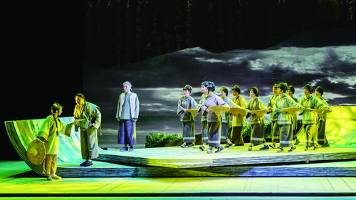
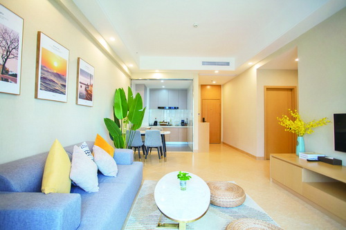
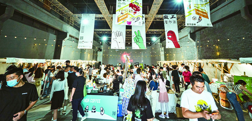

热门剧《开端》的重要场景，就是在厦门影视拍摄基地影棚内利用LED屏特效技术拍摄完成的

集美集利用优势资源，推动社区文化提升和夜经济发展。

汇景为来厦剧组精心布置的公寓。
文/本报记者 刘筠
图/受访单位 提供
厦门自然环境优美，人文底蕴深厚，东西文化交融，被国内业界誉为“天然摄影棚”。当前，厦门正以“全域影城”为方向，努力打造“新时代中国影视中心”。在这个过程中，影视产业园区的平台作用不言而喻。记者近期走访了三家上榜首批厦门市文化产业重点园区的影视产业园，感受厦门影视产业发展的快速步伐。
厦门影视拍摄基地
补齐厦门影视产业短板
有别于其他影视产业园，厦门影视拍摄基地针对厦门一直没有标准摄影棚的短板，定位为“精品影视项目聚集、内容生产制作孵化器”，旨在打造一个一站式专业影视拍摄基地。
走进厦门影视拍摄基地，就置身于厦门影视产业的“梦工厂”，当年的厦门包印集团杏林厂区被改造成为全市规模最大、配套最完善的一站式专业影视拍摄基地。园区建设了“剧组服务中心、组合摄影棚、招商服务中心、数字摄影棚”等四个功能区。其中剧组服务中心是车辆、演员、外联、器材、建材等剧组配套企业的办公区域;面积最大的组合摄影棚由两个2000平方米的基础摄影棚、三个实景摄影棚(两个1100平方米、一个1400平方米)、两个置景车间和一个道具库及化妆间等配套功能区构成，剧组可根据需要临时制作搭建场景;招商服务中心具备企业办公、影视培训、学研区域，同时配套多个剧组办公空间;3200平方米的标准数字摄影则是省内首个对标国际标准的高科技摄影棚。基地也吸引了包含北京刚臣影业有限公司、火焰山影视器材有限公司、东阳华裳锦绣影视文化传播有限公司、戏帮影视传媒有限公司等国内领先的道具、服装、器材等影视产业配套服务企业入驻。
截至今年7月，基地已接待79个拍摄项目，包括金鸡创投优胜作品《三贵情史》、正午阳光热播网剧《开端》、爱奇艺热播剧《对手》、华策影视为厦航定制的《向风而行》等影视剧和汽车、手机、日用品等广告宣传片。此外，由入驻企业厦门正午阳光影视有限公司在厦立项出品、发行的《山海情》，基地运营机构厦门市影视产业服务中心有限公司联合出品并在厦门立项的《周生入故》等诸多“厦门出品”影视精品呈现在全国观众面前……
在功能升级方面，厦门影视拍摄基地着手电影人才的培养，全方位开拓影视教育板块，打造“影视培训”“影视研学”“影视游学”“影视项目孵化”等系列常态化业务:一是创建“人人有戏”影视研学与“幕后大师”职业技能教育两大IP，二是推进金鸡电影学院品牌落地，基于金鸡创投落地开展训练营，构建电影导师制等人才培养的新路径、新模式，打造优质的产业链电影圈层生态。目前，厦门影视拍摄基地已与中国传媒大学、厦门大学、集美大学、华侨大学、厦门理工大学等达成战略合作，力图为影视行业输送更多专业人才。
集美集影视产业园
做在地影视企业的孵化器
早在2015年，集美区就开始着力发展影视产业，出台福建省首部影视产业政策、打造厦门影视产业的总部园区——集美集影视产业园，同时引进厦门市影视产业服务中心进行市场化运作。在旧厂区特色厂房的基础上改造而来的集美集，已经成为集影视企业实体办公区、影视产业总部园区、园区小摄影棚区、影视公共配套服务区和剧组生活配套服务区等功能的文创基地，实现华丽蜕变。
2016年1月，厦门市影视产业服务中心入驻，园区按“一园多区”的规划布局，以“影视商务”与“影视文创”为依托，聚合“影视+旅游”“文创+休闲”“产业+孵化”元素引入多元化园区业态，吸引两岸优质影视企业进驻。同时以“厦门市影视产业总部园区”为产业基础运营平台，延伸上下游产业链，拓展“影视招商”“影视服务”“影视文创”三大核心板块。2018年厦门开始筹备金鸡奖落户一系列工作，市区两级相关产业扶持政策不断出台，2019年厦门实施“大招商、招大商”战略……抓住这一个个有利节点，集美集影视产业园从最初的年产值不到1亿元，实现了6亿元到10亿元再到如今20亿元的飞跃，园区累计产值已突破62亿元。
厦门市影视产业服务中心有限公司总经理钟元告诉记者，从影视企业落地开始，中心就提供“一站式”服务，包括政策咨询、企业注册、证件办理、银行业务、税务代办等。目前，集美集已入驻近900家企业，其中不乏热门影片《夺冠》《少年的你》的发行方厦门联瑞影业有限公司、《战狼》《我不是药神》的投资方北文时代(厦门)影视文化传媒有限公司、知名宣发公司自在互娱等，同时见证了深空片场(厦门)文化传播有限公司、骁帅影业(厦门)有限公司、厦门灿影传媒有限公司等本土影视企业的成长。凭借迅猛的发展态势，园区获评2017-2019、2020-2022两届“福建省文化产业重点园区”。
同时，集美集不仅是个产业园区，也被浓厚的居住氛围、文艺气息和年青时尚风潮包围，吸引了如SO WHAT搜瓦特、MUMO木墨、予光等特色文创业态入驻，园区还不定期举办主题文创活动，如“芒种”茶话会、“拾·光市集”“青芒市集”“集美集公益电影放映季”等，吸引大批市民、高校学生、来厦游客参与，“集美集”话题在社交平台上有超万条相关笔记。配合集美区青年发展友好型城区建设，集美集影视产业园不仅是厦门影视旅游文化新地标，更逐步成为城市青年文化创造力的集聚地。
汇景海峡影视服务中心
为来厦剧组
打造温馨的“家”
律政悬疑系列剧《庭外》今年暑期档热播，再次让全国观众领略到厦门的旖旎风光，该剧由著名导演张黎、黄伟执导，夏雨、罗晋领衔主演。“罗晋在天台上远眺的场景，就是在我们现在所处的这个空中花园拍的。看，厦门东部片区、新机场、澳头艺术中心……”汇景海峡影视服务中心总经理张振向记者展示剧照，颇为自豪。
借势“金鸡”而起的汇景海峡影视服务中心，地处翔安南部新城核心，是海峡现代城50万平方米城市产业综合体的重要组成部分。2018年6月，通过几轮实地考察，著名导演林超贤亲自拍板:将海峡现代城定为电影《紧急救援》筹备基地。7.6亿元投入、台前幕后全明星的阵容，“厦门史上最大的剧组”由此在翔安诞生，在海峡现代城“安家”。这也是汇景团队第一次接待影视剧组。
感受到汇景“近岛环海”的地理优势、各项软硬件设施配备以及专业的服务团队，《紧急救援》制片组也自发宣传，汇景在影视圈内迅速打开口碑，汇景海峡影视产业服务中心也正式成立，并开启了与国内顶尖影视制作、影视传媒公司的频繁合作。
采访当天，优酷网剧《超时空护卫队》剧组正全员入住公寓，“公寓档期挺满的，今年以来都在排队入住，未曾断档”，说到园区的配套，张振如数家珍。除了商务办公区、艺术茶空间、楼间绿地甚至总裁办公室等全部可以开放给剧组取景拍摄，汇景海峡影视服务中心更配备了269间四星装修标准的服务公寓，地上、地下近1200个停车位，更有适合剧组停放大型车辆的超大停车场，公寓内部专门腾出多个道具间、直播间、化妆间、服装间等，顶层还有影视创意研讨中心，方便剧组研读、修改剧本台词，“工作久了就可以走到天台透透气，看看海，寻找灵感”。此外，还有供剧组专门使用的健身房、瑜伽室、篮球场、乒乓球室、私人影厅，“这个餐厅也是剧组专用，每个剧组基本上都会自带厨师，加上每天拍摄计划不一样，用餐时间也不太固定，单独辟出这个餐厅，比较好用”，张振说，餐厅旁有个800平方米宴会厅，剧组的杀青宴就可以在公寓内部办，十分便利。
据介绍，三年来，该中心已接待剧组近50个，占厦门总接待量近十分之一。汇景集团总裁庄顺茂表示，未来汇景海峡影视服务中心将依托厦门海洋高新产业园区的海洋文旅、海洋文创、海洋科技等产业发展规划，进一步打造影视企业聚合区、影视技术创新区、影视科技体验区、影迷经济孵化区、商务休闲区，借鉴“横店经验”，打造“产城融合”新标杆。
 330445074@qq.com
330445074@qq.com